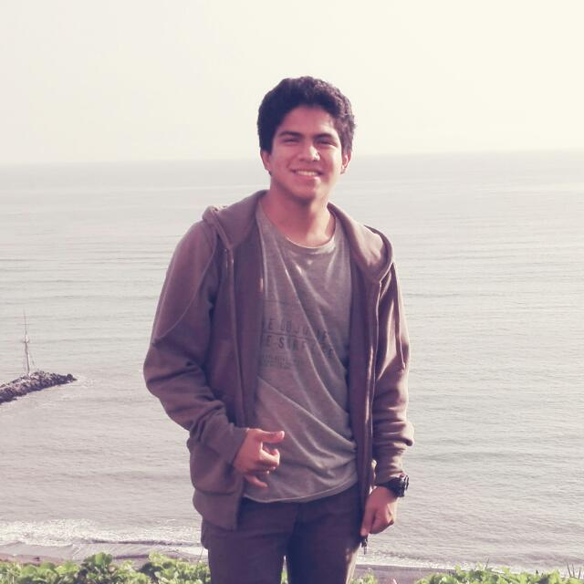

Hugo Alonso Negreyros Arevalo
 Hola! soy Alonso tengo 18 años y provengo de la ciudad de Sullana que pertenece al departamento de Piura - "La ciudad del eterno calor". Ahora soy estudiante de Ingeniería Electrónica en la Universidad de Ingeniería y Tecnología (UTEC) y estoy cursando mi primer ciclo. En general, llevo 8 cursos los cuales son Física, Química General, Química Experimental, Laboratorio de Comunicación, Ingles, Desafíos Globales, Introducción a Ciencias de la Computación y Matemática.
Porqué UTEC:
Elegí UTEC debido a que es una universidad que busca que sus alumnos puedan interaccionar con las nuevas tecnologías que se presentan en nuestro entorno. Asimismo, porque impulsa la auto superación en cuanto a su metodología i+ que desarrolla la creatividad de sus estudiantes.
Pasatiempos y deportes
A mi me gusta leer, programar, escuchar música, ver series y danzar. Actualmente, mi autor favorito es Edgar Allan Poe; a pesar de que estoy aprendiendo a programar, siempre busco hacer algo mas. Del mismo modo, me gusta el rock y las series de suspenso. Por otro lado, practico basquet, fútbol y de vez en cuando natación.